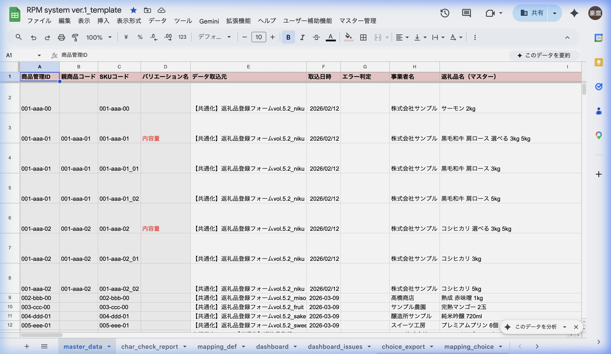
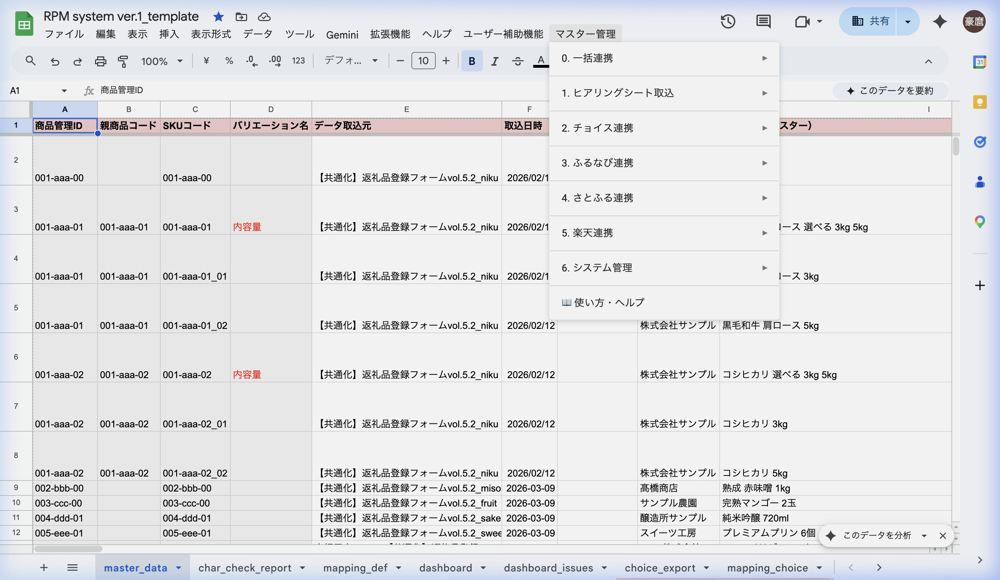

RPM
返礼品マスター管理システム
1つのマスターデータから、4つのふるさと納税ポータルサイトへ
一括データ変換するGAS自動化システム
🟢 ふるさとチョイス
TSV形式で出力。親品＋子品（バリエーション）に対応。コピー＆ペーストでチョイス管理画面に直接貼り付け可能。
🔵 ふるなび
CSV形式でダウンロード。新規登録用と更新用（受付期間変更）の2種類のデータ作成に対応。
🟠 さとふる
CSV形式でダウンロード。お礼品名50文字制限、伝票用16文字制限など独自のバリデーション付き。
🔴 楽天市場
CSV形式でダウンロード。AIによるジャンルID自動推論＋商品属性自動生成。3層構造（Item/SKU/Option）。
📊 データの流れ
🚀 クイックスタート
初めて使う場合は、以下の6ステップで全サイトのデータを一括作成できます。
-
master_data にデータを入力
ヒアリングシートから取り込む（メニュー 1-1 → 1-2）か、直接入力してください。
-
対象行を選択
master_data シートで転記したい行をドラッグ選択します。ヘッダー（1行目）は含めないでください。
-
メニュー → 0-1. 一括エクスポート
チェックボックスで出力先を選び「実行」を押すと、全サイトのシートが一度に生成されます。
-
メニュー → 0-2. カテゴリ・ジャンルID一括挿入
AIが各サイトのカテゴリとジャンルIDを自動判定します。精度は約90%で、結果は目視チェックしてください。
-
メニュー → 0-4. 一括バリデーション
全サイトの文字数制限・必須項目を一括チェック。エラーは黄色ハイライト＋ノートで表示されます。
-
各サイトのデータ出力を実行
2-4（チョイスTSV）、3-4（ふるなびCSV）、4-4（さとふるCSV）、5-5（楽天CSV）でファイルを出力します。
必ず master_data シートを開いた状態 で、転記したい行を選択 してからメニューを実行してください。
📚 ドキュメント
操作マニュアル
メニュー項目ごとのステップバイステップ操作手順。スクリーンショット付き。
仕様書
システム構成、データフロー、変換ルール、AI推論エンジンの技術仕様。
マッピング定義
5つのマッピングシート全項目を検索可能なリファレンス。
FAQ・用語集
よくある質問、トラブルシューティング、専門用語の解説。
自治体セットアップ
新しい自治体を担当する際の設定変更チェックリスト。
早見表
全メニュー項目を1ページに凝縮。印刷してモニター横に。
🖥️ 画面イメージ

RPM スプレッドシート — master_data シート

マスター管理メニュー — 全機能へのアクセス